Правила отгадывания ребусов
Простейший вариант, когда ребус состоит из двух картинок, которые помогут составить новое слово. Названия предметов, изображённых в ребусе, следует читать в именительном падеже единственного числа или множественного, если изображено несколько предметов.
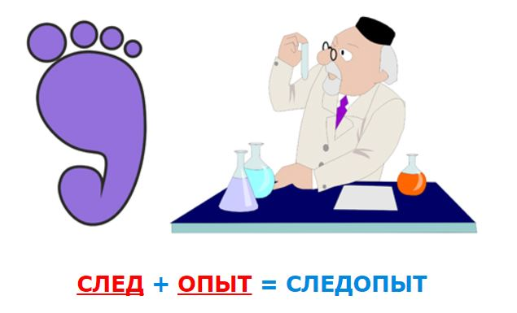
Если картинка перевернута вверх ногами, это значит, что слово читается «задом наперёд».
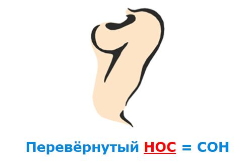
Если справа или слева от картинки стоит одна или несколько букв - это значит, что эти буквы просто следует добавить. Бывает, перед ними ставится знак «+». Иногда нужный объект на картинке указывается стрелкой.
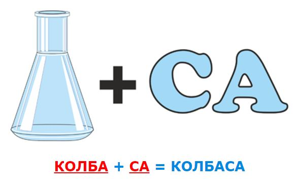
Запятые справа или слева от картинки означают, что в загаданном, с помощью картинки, слове нужно удалить столько букв, сколько стоит запятых. При этом запятые перед картинкой обозначают, сколько букв нужно убрать вначале загаданного слова, запятые в конце рисунка обозначают, сколько букв нужно убрать с конца слова. Иногда запятые слева от изображения рисуют вверх тормашками, хотя принципиальной роли это не играет.
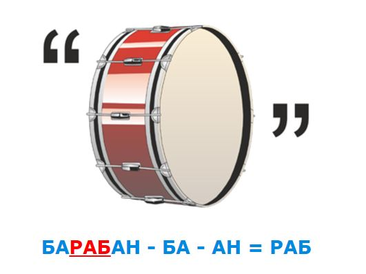
Стрелка, остриём влево, изображённая над картинкой, указывает, что после того как слово расшифровано его нужно прочитать задом наперёд.
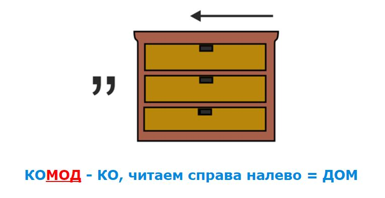
Если над картинкой стоит зачёркнутая буква, а рядом стоит другая, то эту букву в слове нужно изменить на указанную. Если же одна или несколько букв просто зачеркнуты, то их нужно удалить из данного слова. Знак "=" тоже служит для замены одной из букв на другую.
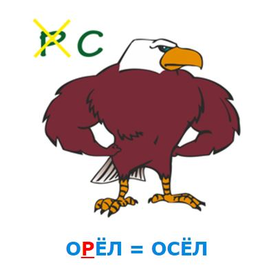
Если зачеркнутая буква(ы) стоит как независимая фигура, то ее необходимо читать с прибавлением частицы «не».
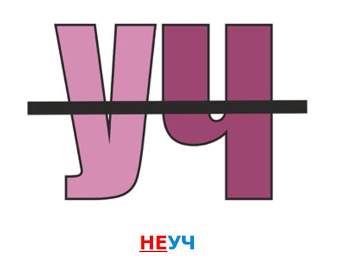
Вместо картинки могут использоваться цифры. Если часть слова в ребусе изображена числом, то число произноситься как числительное.
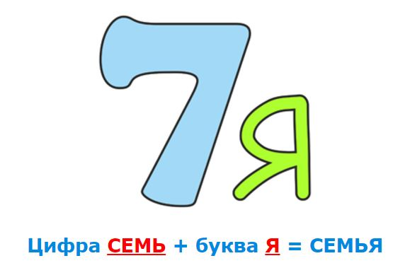
Цифры рядом с картинкой служат для нумерации букв в слове. Цифра обозначает место буквы в данном слове, а порядок, в котором написаны цифры – определяет новое место этой буквы.
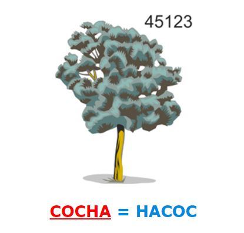
Употребление зачёркнутых цифр означает, что в загаданном слове надо убрать соответствующие буквы.
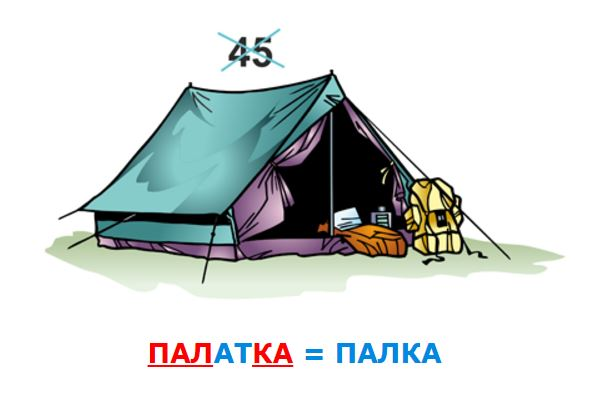
Перечёркнутый знак "=" между картинками следует читать как "НЕ".
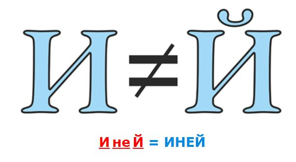
Использование горизонтальной черты между размещёнными друг под другом картинками, буквами или цифрами означает использование предлогов "НА", "НАД", "ПОД".
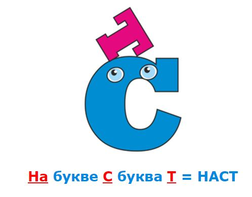
Применяются и другие способы показать букву как объект с использованием предлогов.
Если одна буква лежит около другой, прислонена к другой, то читают с прибавлением "У". Аналогично могут использоваться предлоги "С", "ОТ", "К", "ПО", и другие.
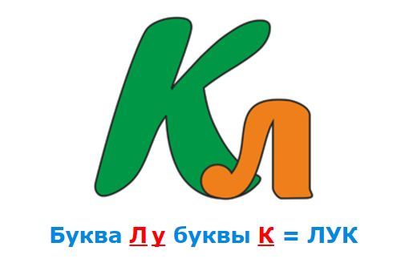
Если при составлении ребусов используют ноты, стоит определить, на какой черте она расположена.
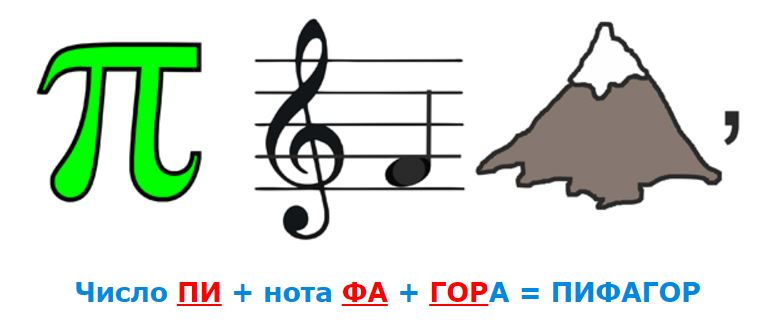
Часто в одном ребусе можно встретить разные комбинации загадок.